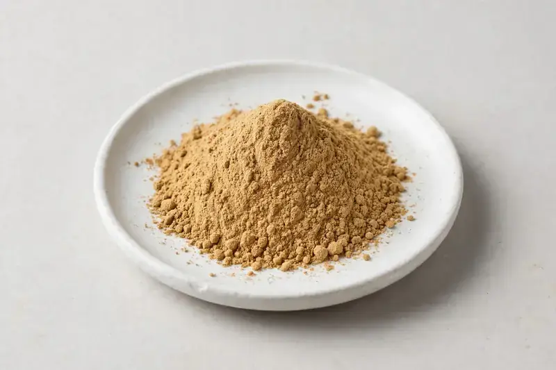

Paullinia cupana seed extract positioned for natural-energy beverage and pre-workout formulations, supplied as a tan to brown powder.

Overview
Guarana seed extract comes from the seeds of Paullinia cupana and is supplied as a tan to brownish powder, standardised on natural caffeine content or sold as a ratio extract. Beverage and sports-nutrition brands request it for energy drinks, shots and pre-workout blends where a naturally derived caffeine source suits the label. From Xi'an we handle guarana through vetted partner producers and confirm the caffeine grade against each buyer's target spec.
Specifications below reflect commonly requested options in the market — not a stock list. Share your target spec and we'll confirm exactly what we can supply, honestly.
| Specification | Details |
|---|---|
| Botanical identity | Paullinia cupana seed extract, powder |
| Marker compound | Natural caffeine — commonly requested: 10-22% (HPLC); 4:1 and 10:1 ratios also traded |
| Appearance | Light brown to tan fine powder |
| Mesh size | Typically 80–100 mesh (confirm per inquiry) |
| Testing | COA/TDS arranged on request; scope agreed per your spec |
Applications
Documentation
We don't claim in-house labs or certifications we don't hold. COA and TDS documents can be arranged on request, and testing scope is agreed against your specification before supply.
FAQ
Related products
Polygonum cuspidatum
Key marker: Trans-Resveratrol
View specs →Vitex agnus-castus
Key marker: Agnuside
View specs →Epimedium sagittatum
Key marker: Icariin
View specs →Scutellaria baicalensis
Key marker: Baicalin 85-90%
View specs →L-Theanine (tea-derived amino acid)
Key marker: L-Theanine
View specs →Send your target spec and volumes — we'll respond with a tailored quotation.
Request a Quote